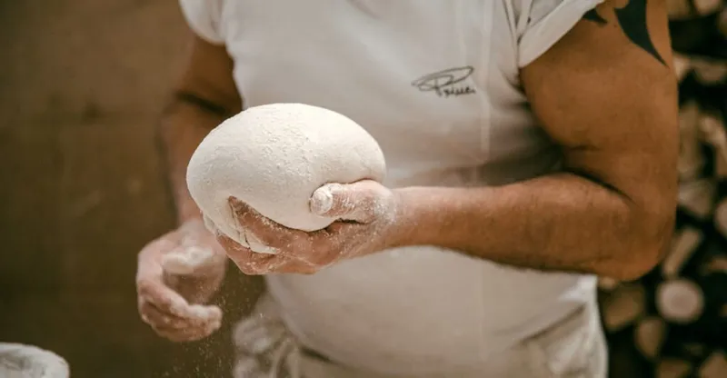
Princi – Piazza XXV Aprile
3 min a piedi
Panetteria e caffetteria con lievitati, pizza e focacce sfornati durante la giornata, di fronte a Eataly.
Percorso a piediIl quartiere · Mangiare e bere
Colazione, pranzo di lavoro, aperitivo, cena: gli indirizzi che consigliamo, tutti a pochi minuti. Se serve un tavolo, lo prenota la reception.
 IsolaPorta NuovaBreraMoscovaPaolo SarpiCentrale
IsolaPorta NuovaBreraMoscovaPaolo SarpiCentraleMappa © OpenStreetMap contributors
Minuti a piedi stimati. Base cartografica © OpenStreetMap contributors.
La guida

3 min a piedi
Panetteria e caffetteria con lievitati, pizza e focacce sfornati durante la giornata, di fronte a Eataly.
Percorso a piedi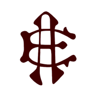
4 min a piedi
Trattoria storica del 1880 con piatti milanesi come risotto al salto, ossobuco e cotoletta; chiusa la domenica.
Percorso a piedi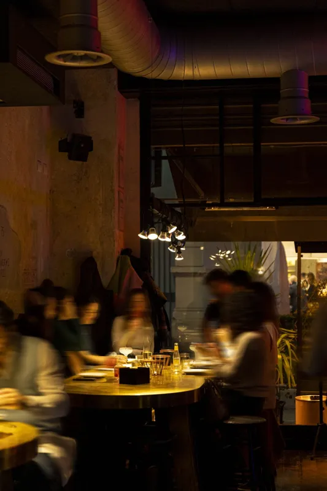
8 min a piedi
Pizzeria e cocktail bar aperto la sera; settimo nella classifica Top Pizza 2026.
Percorso a piedi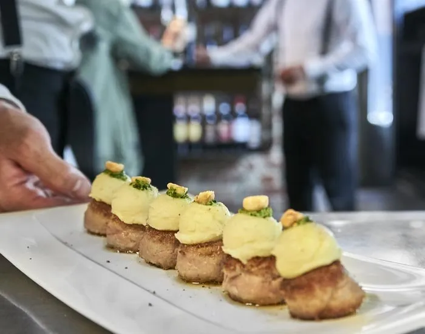
8 min a piedi
Cucina creativa in un palazzo Liberty vicino a Porta Nuova; aperto a pranzo e cena dal lunedì al venerdì.
Percorso a piedi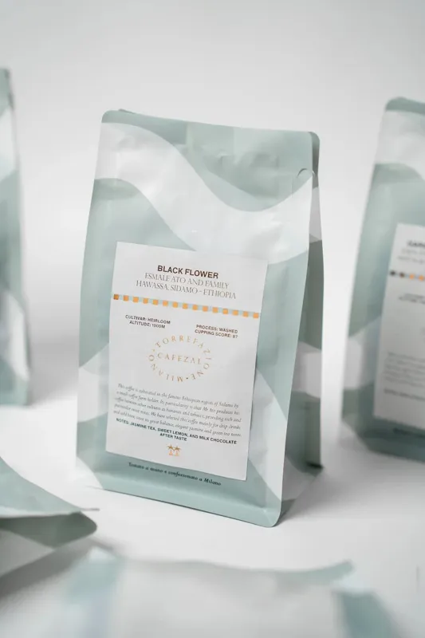
8 min a piedi
Caffetteria specialty con caffè tostato in proprio; Tre Tazzine e Tre Chicchi nella guida Bar d'Italia 2026.
Percorso a piedi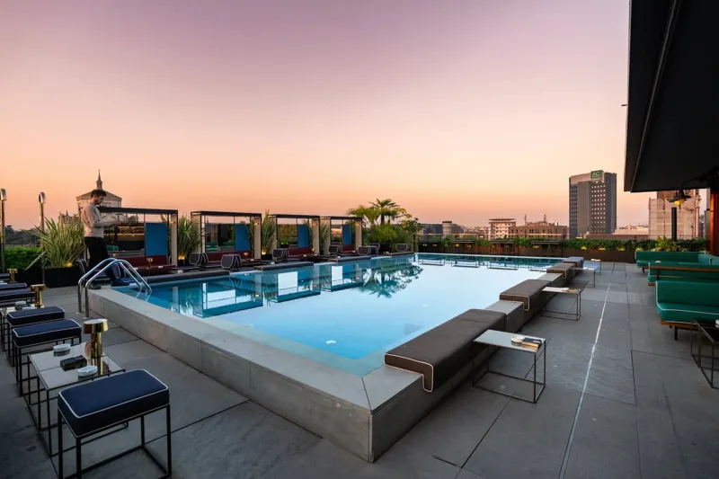
8 min a piedi
Bar e ristorante sul tetto dell'ex palazzo Enel, con due piscine e vista sullo skyline di Porta Nuova.
Percorso a piedi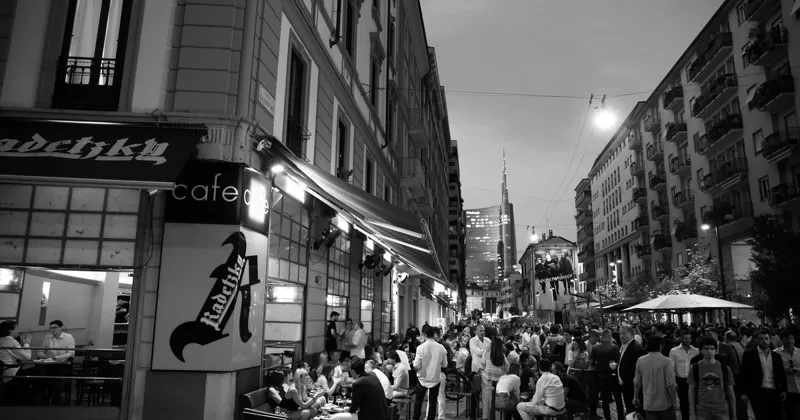
8 min a piedi
Caffè aperto dalla colazione a tarda sera, noto anche per l'aperitivo all'aperto su Largo La Foppa.
Percorso a piedi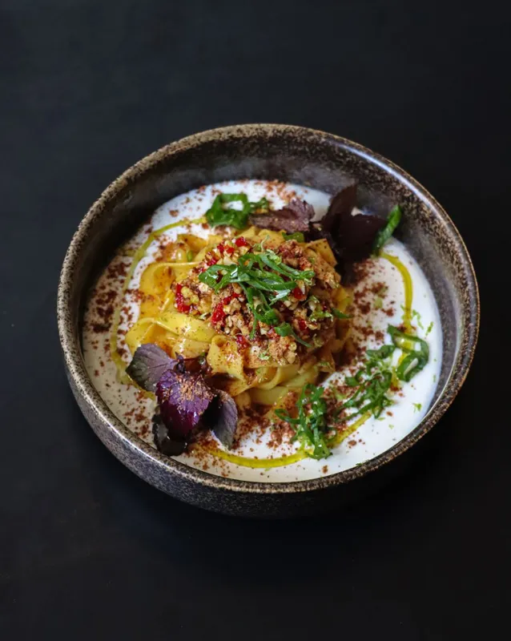
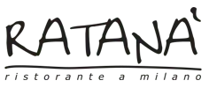
11 min a piedi
Cucina milanese e lombarda dello chef Cesare Battisti in un ex deposito tranviario davanti alla BAM; segnalato dalla Guida Michelin.
Percorso a piedi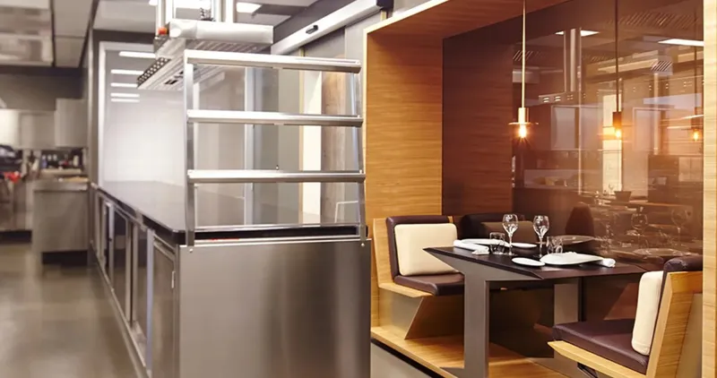
11 min a piedi
Ristorante di Andrea Berton con una stella Michelin (guida 2026), cucina italiana contemporanea.
Percorso a piedi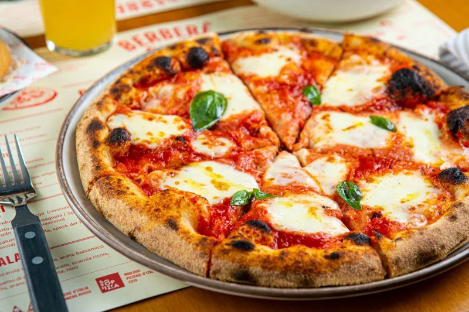
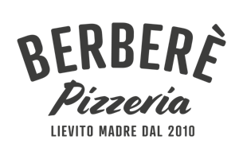
11 min a piedi
Pizzeria con impasti a lievito madre e farine biologiche, servita a spicchi da condividere.
Percorso a piedi12 min a piedi
Pasticceria di stampo francese nel quartiere Isola, con viennoiserie e monoporzioni.
Percorso a piedi23 min a piedi
Wine bar con oltre 600 etichette, in gran parte di piccoli produttori, e salotto con poltrone e divani.
Percorso a piediFoto e loghi dai siti ufficiali dei locali. Da autorizzare con ciascuno prima della pubblicazione